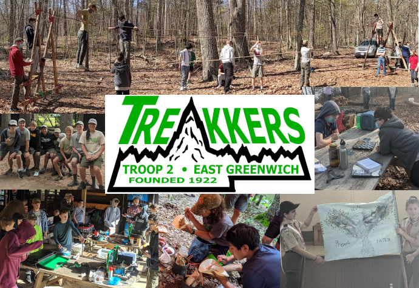
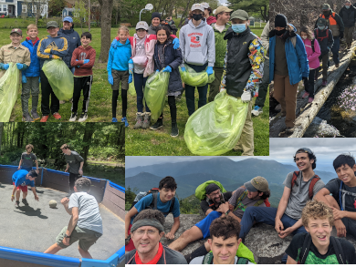
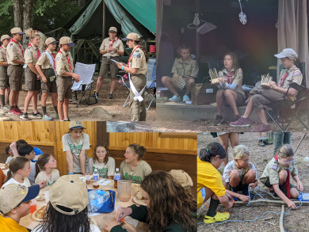

Linked Boys & Girls BSA Troops
Troop 2 East Greenwich is a Scouts BSA Troop chartered by the East Greenwich Boys Home Association and is a member of Narragansett Council - Boy Scouts of America in the Southwest Service Area district. Troop 2 has both a boys and a girls program (two separately chartered Troops) that will often combine for meetings, service projects and special events.
What is Scouting? The Boy Scouts of America is a Scouting organization, dedicated to helping youth learn and grow. The Scouts BSA program challenges youth to try new things, with a focus on learning outdoor skills, developing leadership and supporting the community, all while building lasting friendships, self-confidence and reinforcing ethical standards. The Boy Scouts of America (BSA) is a member of the World Scouting organization, which is one of the largest youth organizations in the world, with over 40 million members in 224 countries and territories. Scouting was all started by Robert Baden-Powell in 1907 England, Today, the BSA has Scout programs for boys and girls and Troop 2 offers both a boys (Troop 2B) and a girls (Troop 2G) program through two separately chartered Troops.
What does Troop 2 do? We camp, hike, backpack, swim, canoe, cycle, ski (alpine and Nordic), snowboard, play games & sports, learn skills and serve in our community. We try to do just about everything the Scouts dream up, which means we always have a lot of fun! We also attend local and regional Scout Camporees to meet, interact and sometimes compete with other Troops.


Our Program... Typically runs from September through June and concludes with a week long summer camp at Yawgoog Scout Reservation (1800 acres of wild paradise). We meet once a week during the school year and plan for one trip a month (except in December). We camp outdoors (often on private and pristine Scout owned reservations) or stay in cabins and lodges, depending on the location and activity.
Equipment Our equipment includes:
- 15 canoes
- over 20 tents and shelters
- stoves
- cooking gear
- expertly crafted patrol boxes
Troop 2 Scouts learn to select the right outdoor gear and how to use and care for everything we have, as well as how to wear, use and care for their own personal gear.
Leadership Our youth leaders attend National Youth Leadership Training to help prepare them to lead our Troop in all our amazing adventures. Our older Scouts often attend national and international Scout events like the National Scout Jamboree and the World Scout Jamboree or world-class camps like Philmont Scout Ranch in New Mexico or Sea Base in Florida. We have also arranged our own international exchange programs with Scout organizations in Canada and England (see our Troop history).
But... What if I already do other things, like homework, music and sports?
You can still be a Scout! All of our Scouts go to school and most participate in other activities during their Scouting career, like club or school sports, marching band or take lessons for things like music or martial arts. If they can do it, you can do it too! We understand that Scouts may miss meetings or camp outs, or come late or leave early. When you think about it, youth will often spend a full 7 years in Scouting. We take this long term view, because we know that Scouting will be there though the ebb and flow of their other activities, providing a solid foundation to learn and grow from. Few things are as beneficial, accommodating or keep youth engaged for as long as Scouting.
Join Us
If you are a boy or girl 11 to 17 years old (no experience required), you can learn and do any or all of these activities, learning from qualified adults and Scouts from our Troop. Yes, Scouts teach Scouts! Learning to teach and lead is part of the Scouts BSA program too (once a Scout reaches the First Class rank).
Below is contact information for our adult leaders who can introduce you to our Troop. We suggest that you come to one of our weekly meetings held on Wednesday nights at Scout Hall on Spring Street. The regular meetings run from 6:00 - 8:00 PM and visitors are welcome!
If you are interested in visiting a meeting, please contact us so we can coordinate and suggest the best time to visit our Troop.
Rob Coates, Scoutmaster Troop 2 B
(401) 474-9158
rob.coates.bsa@icloud.com
Aimee Falso, Scoutmaster Troop 2 G
(401) 524-1516

Enrollment Forms
Troop 2 Boys - Youth Application (online)
Youth Application
Adult Leader Application